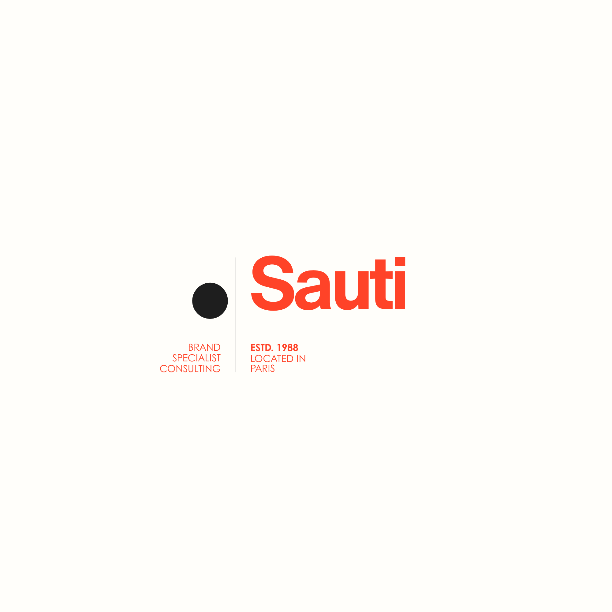

DIAGNOSTIC
On nomme l’écart entre ce que tu vaux et ce que le marché voit. Cash, sans détour.
Ton nom. Tape-le sur Google.
Regarde ce qui remonte.
Tu as quelque chose de valable.
Il est temps que ça se voie.
Du talent, tu en as.
Une présence à sa hauteur ?
C’est ce qu’on va construire.
On nomme l’écart entre ce que tu vaux et ce que le marché voit. Cash, sans détour.
Ton histoire. Ton point de vue. Pas un ton emprunté. Le tien, mais clair.
Les supports qui vont porter ton message, en fonction de qui tu veux atteindre.
On tourne, on écrit, on publie. Au bon endroit, au bon rythme.
On regarde ce qui marche. On coupe ce qui ne marche pas.
Les messages arrivent. À la fin, c’est toi qui tiens le volant. Pas moi.
Nommer le décalage pour savoir où aller.
Ce que personne ne peut raconter à ta place.
Juste assez pour qu’on te reconnaisse.
Pas de raccourci.
Une direction, la tienne.
Sans détour, sans flatterie.
Pas un ton emprunté.
Pas de dépendance.
Du sur-mesure.
On coupe ce qui ne marche pas.
Consultant. Freelance. Coach. Formateur. Solopreneur.
Tu sais ce que tu vaux. Maintenant, on le sait aussi.
« Le travail était bon.
Mais mon nom n’était
jamais dessus. »
J’ai passé 15 ans à créer de l’engouement pour d’autres marques que la mienne.
Ton client connaît le résultat que tu lui as apporté. Jamais le nom derrière. Voilà pourquoi je sais où ça bloque, chez toi aussi.
45 minutes pour savoir où tu en es.
Et ce qu’on ferait à ta place.

Tu vends bien. Par le bouche à oreille, par recommandation. Mais en ligne, ton nom ne dit rien à personne qui ne te connaît pas déjà.
Consultant, freelance, coach, formateur, solopreneur. Tu factures déjà. Souvent 3 000 € et plus par mission. Tu es au plafond de la recommandation et tu veux que les gens viennent te chercher directement.
Ce n’est pas fait pour quelqu’un qui débute et qui cherche encore son offre. C’est fait pour quelqu’un qui sait déjà ce qu’il vaut et qui veut que le marché le sache aussi.
Chaque mois sans nom qui remonte, c’est un client qui va chez quelqu’un de moins bon que toi, mais qu’on trouve, lui.
Pas de prix affiché ici. Une conversation de 45 minutes suffit pour savoir si ton point de départ correspond à ce qu’on fait.